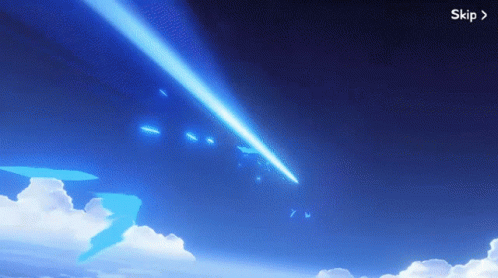
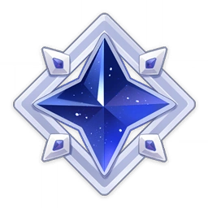
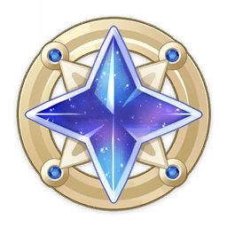

|
|
|
|
|

Wishes are the gacha system in Genshin Impact. There are two main types of Wishes: the permanent Standard Wish, Wanderlust Invocation, and limited-time Event Wishes for Characters and Weapons.
Players can unlock wishes after completing the Archon Quest Knights of Favonius in Prologue: Act I - The Outlander Who Caught the Wind, which players can reach at around Adventure Rank 5.
Availability

The "Standard Wish," Wanderlust Invocation, is always available and requires Acquaint Fate to wish from it. The Beginners' Wish is available indefinitely until all 20 wishes are made, has a 20% discount on the Acquaint Fate required to wish, and guarantees the player receives Noelle and one other 4- or 5-star character within the 20 wishes.

Limited-time Event Wishes are split into two wishes, one for characters and one for weapons, and as the name implies, they are only available for a limited time. Event Wishes require Intertwined Fates instead of Acquaint Fates.
Character Event Wishes have one promotional 5★ character and three featured 4★ characters. Weapon Event Wishes will have two promotional 5★ weapons and five 4★ featured weapons. Both the promotional 5★ and featured 4★ items will have an increased probability for players to wish them when compared to the basic rates when the guarantees are factored in.
Players can buy either of the Fates for 160 Primogems each in the Wishes menu or through Paimon's Bargains. There are also in-game methods of obtaining Fates; see their respective pages for more information.
Masterless Items
When players wish weapons and characters from wishes, they also receive Masterless Stardust and/or Masterless Starglitter. These items can be traded in Paimon's Bargains to obtain other items or characters.

Masterless Stardust

Masterless Starglitter
-
Masterless Starglitter is a special currency that is used to purchase rarer items, Intertwined or Acquaint Fates, or a monthly rotation of characters and weapons from Paimon's Bargains. If a player obtains a 4/5★ weapon from a Wish or a character that they already own, they will receive Masterless Starglitter. The amount rewarded differs on the quality of the item or character as well as how many times a player has pulled duplicates of that same character before.